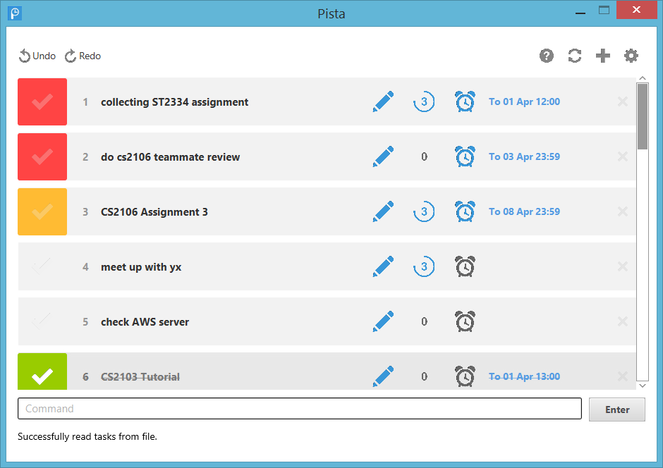
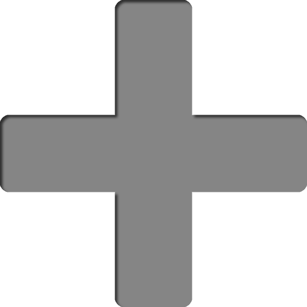
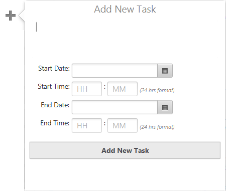
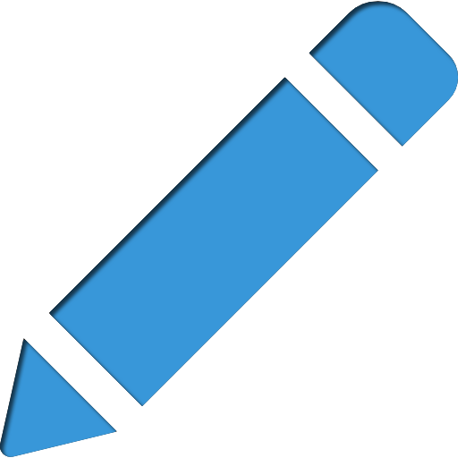
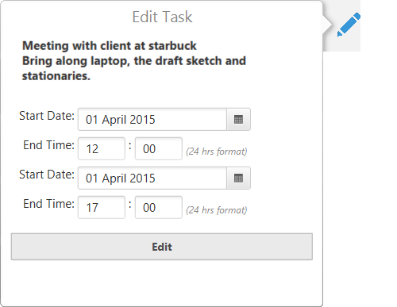
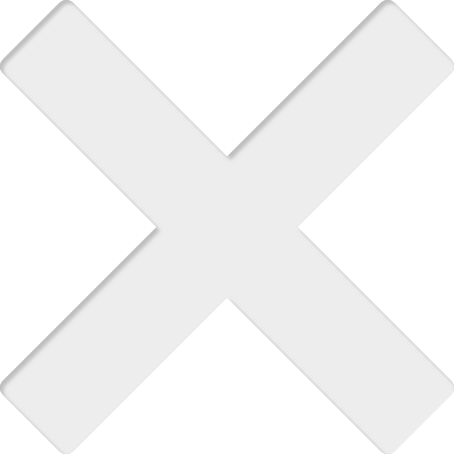
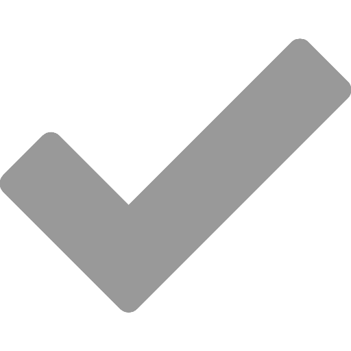

User Interface
Pista has provided a simplistic User Interface (UI) for you to organize your task easily. Pista includes alarm which you will be notified when a task is due soon. Pista is also available and compatible with Windows tablet.

Add a new task
You can add a new task into the list. Follow the guide below to learn more about adding a task.
- Click the Add icon  in the upper-right corner of Pista.
- From the Add pop-pop, fill in the title of the task, the start date and time and the end date and time.
Click on the calendar icon to select the date.
Type in the hour field in 24 hours format (00 to 23).
Type in the minute field in this format - (00 - 59).
- After you have selected the title, dates and times of the task, click Add New Task to add your new task.
Edit your task
You can edit your task as well. Follow the guide below to learn more about adding a task.
- Click the Edit icon  at the task row which you like to edit.
- From the Edit pop-up, you are allowed to change the title, dates and time of the selected task.
Click on the calendar icon to select the date.
Type in the hour field in 24 hours format (00 to 23).
Type in the minute field in this format - (00 - 59).
- After your have confirmed the changes that you have made, click Edit to make the change.
Delete your task
Deleting a task is simple by just a click. Follow the guide below to learn more about deleting a task.
- Click the delete icon  at the task row which you like to delete.
You will not be asked to confirm the deletion. If you have accidentally deleted a wrong task, you can refer to Undo & Redo section.
Mark done & undone
You can mark your task as done or undone. Follow the guide below to learn more about marking your task.
-
To mark as done, click the opaque tick  at the left of the task row.
You may have different colors based on the following desriptions.
- Red box represent the task is overdue and undone.
- Yellow box represent the task is due less than one day.
- Green box represent the task is mark as done.
Remind yourself
. Follow the guide below to learn more about marking your task.